Gaussian Process Surrogate Aided Bayesian Calibration of Material Model Parameters
Problem files |
Outline
In this example, the parameters of the STEEL02 material model in OpenSees are calibrated using Bayesian inference aided by a Gaussian process surrogate model for the response. Experimental data is passed in to quoFEM from an external file, and the output is the time-history of stress.
Problem description
Data
The stress-strain data obtained experimentally from a cyclic test on a coupon prepared from a bar of reinforcing steel is shown in figExperimentalDataSteelCoupon.
{kind=link}
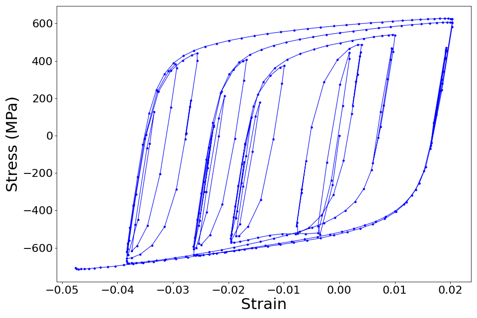
Stress-strain curve from cyclic test on test coupon from reinforcing steel bar.
This stress-strain data was obtained corresponding to a randomized strain history similar to those observed experimentally in reinforcing steel during seismic tests, as shown in figExperimentalDataSteelCouponStrain.
{kind=link}
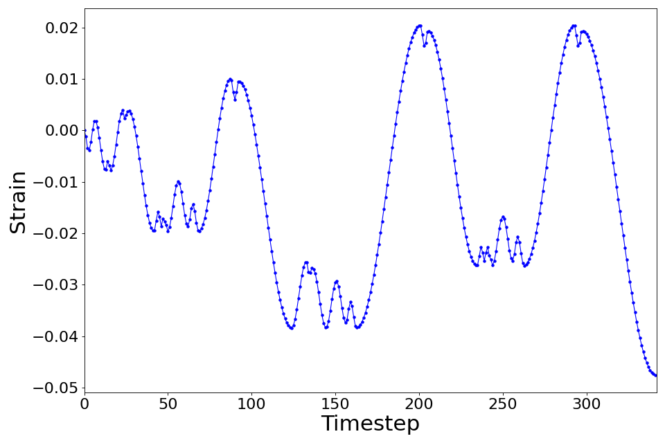
The test coupon was subjected to this strain history.
The corresponding stress history is shown in figExperimentalDataSteelCouponStress.
{kind=link}
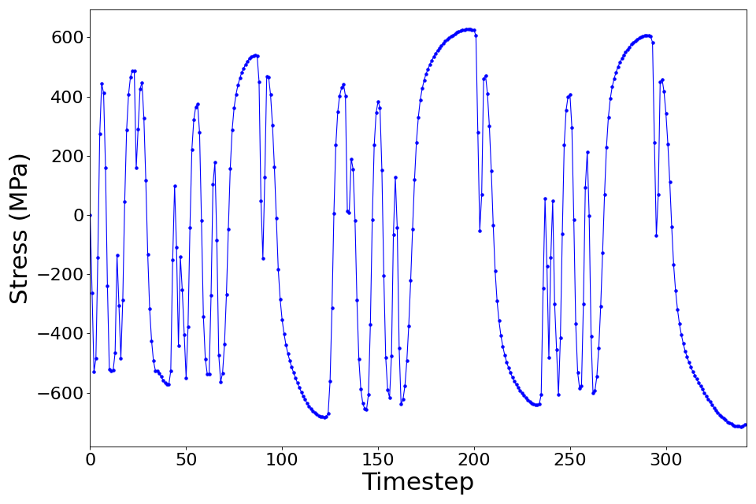
The stress history obtained from the experiment.
Model
For this example, the STEEL02 material model in OpenSees was selected to represent the cyclic stress-strain response of the steel reinforcing bar in finite element simulations. The STEEL02 material model in OpenSees can take a total of 11 parameter values as input, as described in the documentation. Of these 11 parameters, the value of 7 parameters shown in Table 1 will be calibrated in this example.
Table 1: Parameters of the STEEL02 material model whose values are being calibrated.
The value of the other four parameters are kept fixed at:
Variable |
Value |
|---|---|
Elastic-plastic transition parameter \(R_0\) |
20 |
Isotropic hardening parameter for compression \(a_2\) |
1 |
Isotropic hardening parameter for tension \(a_4\) |
1 |
Initial stress value \(sigInit\) |
0 |
Parameter estimation setup
In this example, the values of the parameters shown in Table 1 are being estimated. The table also shows the lower and upper bounds of the uniform distribution that is assumed to the prior probability distribution for these parameters. The unkown parameters in this problem, \(\mathbf{\theta}=(f_y, E, b, cR_1, cR_2, a_1, a_3)^T\) are estimated using the data of the stress response corresponding to the strain history shown in figExperimentalDataSteelCouponStrain.
The Gaussian likelihood that is used by default in quoFEM is employed for this problem. This assumes that the errors (i.e. the differences between the finite element prediction of the stress history and the experimentally obtained stress history) follow a zero-mean Gaussian distribution. The components of the error vector are assumed to be statistically independent and identically distributed. Under this assumption, the standard deviation of the error is also an unknown parameter of the likelihood model and is also estimated during the calibration process. quoFEM automatically sets up the prior probability distribution for this additional parameter.
Files required
The exercise requires one script file and two data files. The user should download these files and place them in a new folder.
Warning
Do not place the files in your root, downloads, or desktop folder as when the application runs it will copy the contents on the directories and subdirectories containing these files multiple times. If you are like us, your root, Downloads or Documents folders contains a lot of files.
matTestAllParamsReadStrain.tcl - This is an OpenSees script written in tcl which simulates a material test and writes the stress response (in a file called
results.out) when subjected to the chosen strain history, for a given value of the parameters of the material model.stress.1.coords - This file contains the strain history that is used as input during the finite element simulation of the material response. The strain values stored in this file are read in by the tcl script performing the OpenSees analysis.
calDataField.csv - This is a csv file that contains the stress data. There is one row of data, which implies that the data is obtained from one experiment. If additional data are available from other experiments, then the data from each experiment must be provided on separate lines.
Note
Since the tcl script creates a results.out file when it runs, no postprocessing script is needed.
UQ workflow
The steps involved are as follows:
Start the application and the UQ panel will be highlighted. In the UQ Engine drop down menu, select the UCSD_UQ engine. In the Method category drop down menu the Transitional Markov chain Monte Carlo option will be highlighted. Enter the values in this panel as shown in the figure below. If manually setting up this problem, choose the path to the file containing the calibration data on your system.
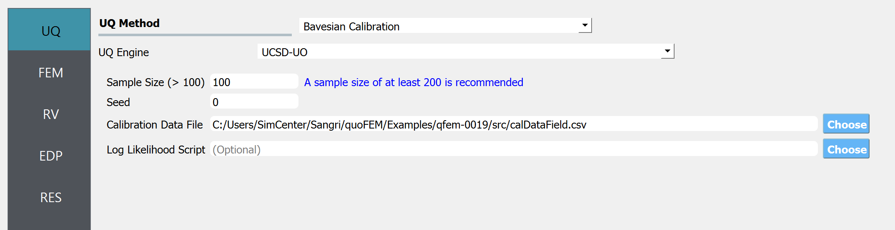
Next select the FEM panel from the input panel selection. This will default to the OpenSees FEM engine. In the Input Script field, enter the path to the
matTestAllParamsReadStrain.tclfile or select Choose and navigate to the file.
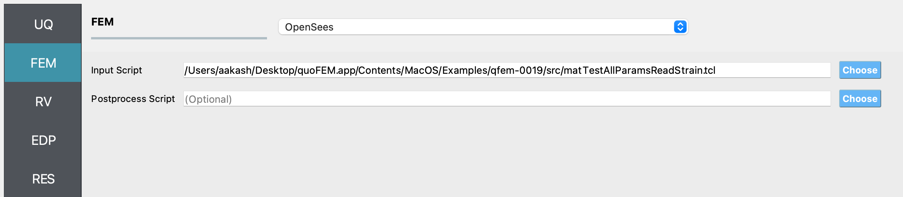
Next select the RV tab from the input panel. This panel should be pre-populated with seven random variables. If not, press the Add button to create new fields to define the input random variables. Enter the same variable names, as required in the model script.
For each variable, specify the prior probability distribution and its parameters, as shown in the figure below.
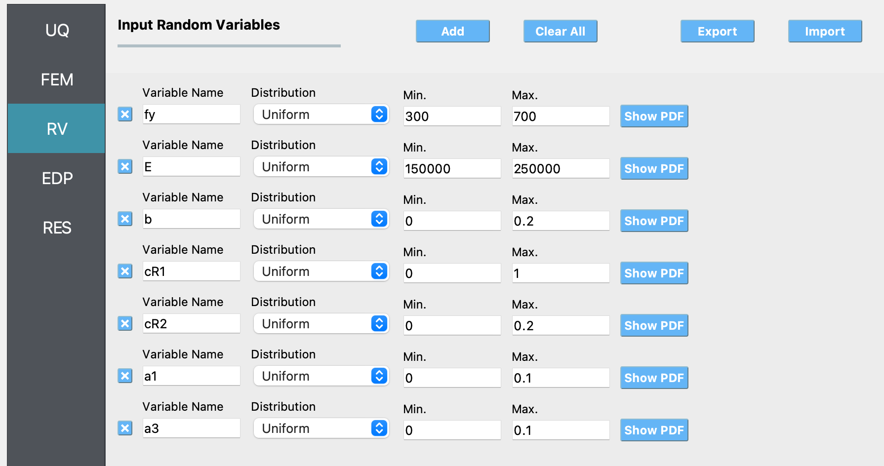
In the QoI panel denote that the variable named
stressis not a scalar response variable, but has a length of 342.
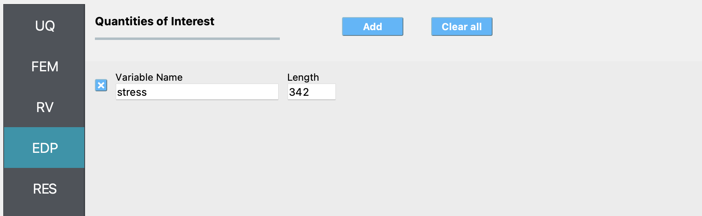
Next click on the Run button. This will cause the backend application to launch the UCSD_UQ engine, which performs Bayesian calibration using the TMCMC algorithm. When done, the RES tab will be selected and the results will be displayed as shown in the figure below. The results show the first four moments of the posterior marginal probability distribution of the parameters estimated in this example. Also shown are the moments of the additional parameter of the likelihood function. Finally, the moments of the predictions of the model corresponding to the samples of the parameter values from their posterior probability distribution are also shown in this panel (not visible in this figure - you can see them by scrolling down in the application).
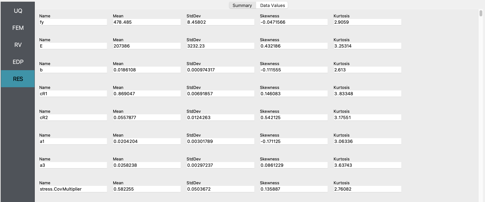
If the user selects the Data Values tab in the results panel, they will be presented with both a graphical plot and a tabular listing of the data.
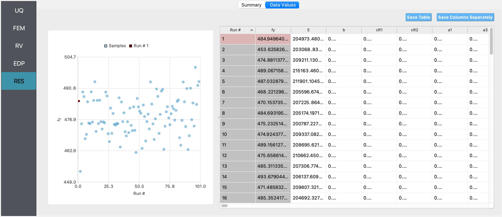
Comaparison with deterministic calibration results
For the same data and choice of material model to represent the data, deterministic estimation of the parameters of the material model shown in Table 1 was also conducted in quoFEM using the non-linear least squares minimization algorithm available through the Dakota UQ engine.
The bounds and the starting point of the search for the optimum parameter values are shown in Table 2.
Table 2: Parameters of the STEEL02 material model whose optimum values are being estimated.
Like in the Bayesian paramter estimation case, the value of the other four parameters are kept fixed at:
Variable |
Value |
|---|---|
Elastic-plastic transition parameter \(R_0\) |
20 |
Isotropic hardening parameter for compression \(a_2\) |
1 |
Isotropic hardening parameter for tension \(a_4\) |
1 |
Initial stress value \(sigInit\) |
0 |
Solution using quoFEM
Note
Selecting the Material Model: Deterministic Calibration example in the quoFEM Examples menu will autopopulate all the input fields required to run this example.
The inputs in the FEM and the QoI panels are the same as in the Bayesian parameter estimation case. The inputs that differ from the Bayesian parameter estimation case are shown in the figures below:
UQ panel:
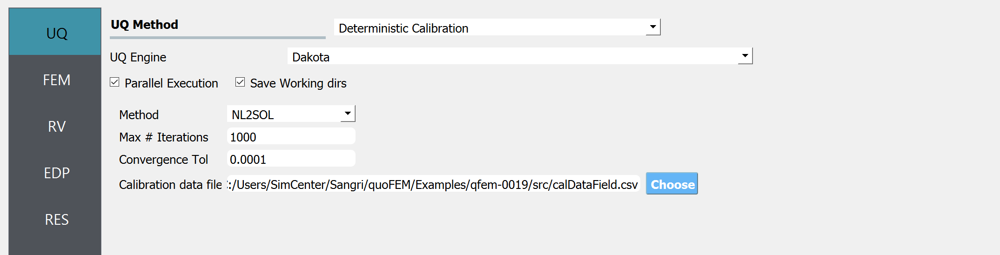
RV panel:
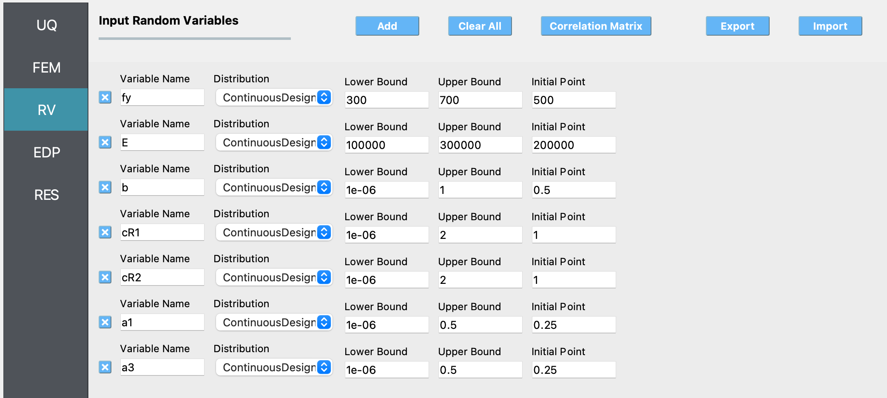
Results
After conducting the deterministc parameter estimation, the results obtained are shown in the figure below:
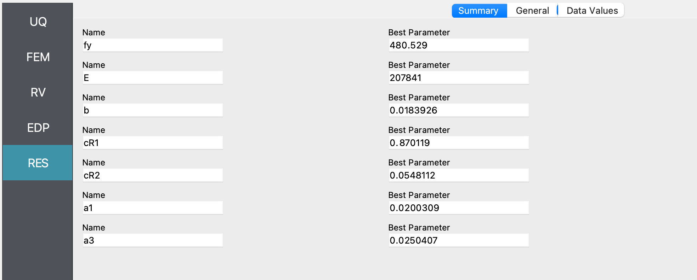
The optimum parameter values estimated in this example match closely match the mean value of the posterior samples shown in the figure of the summary tab of the results panel for the Bayesian parameter estimation case.
The fit corresponding to the optimum parameter values is shown in the figures below:
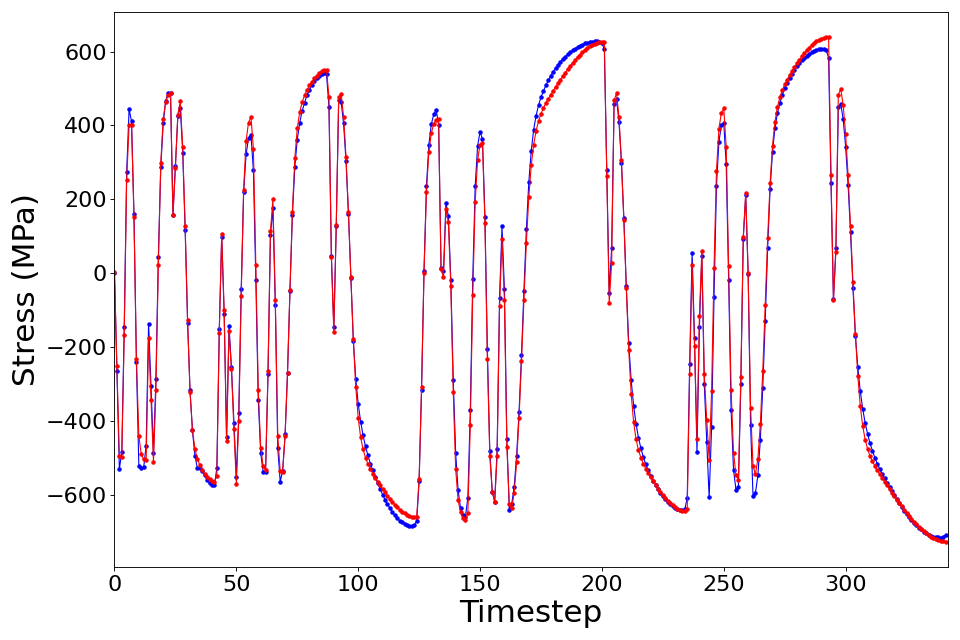
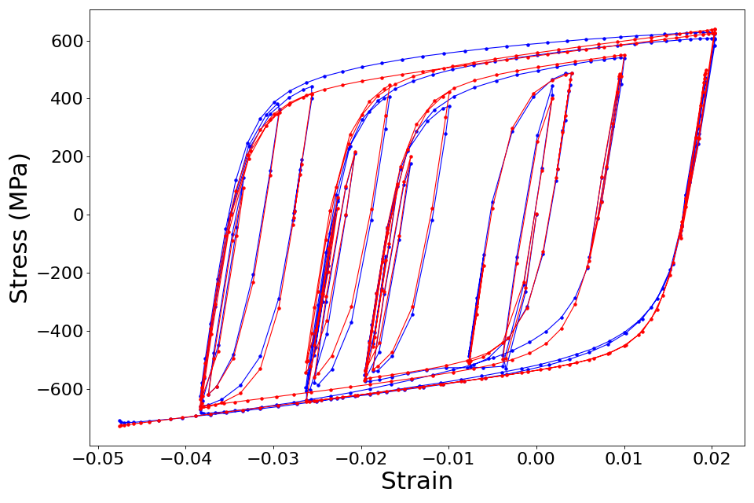